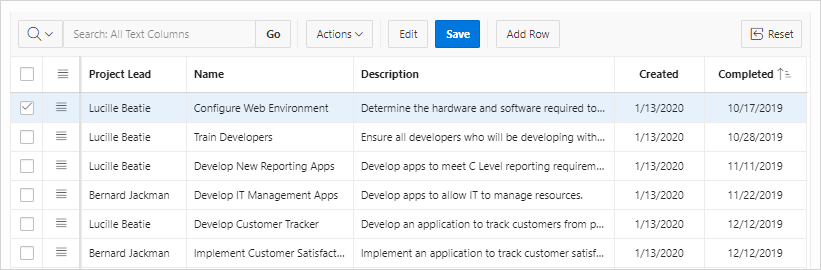
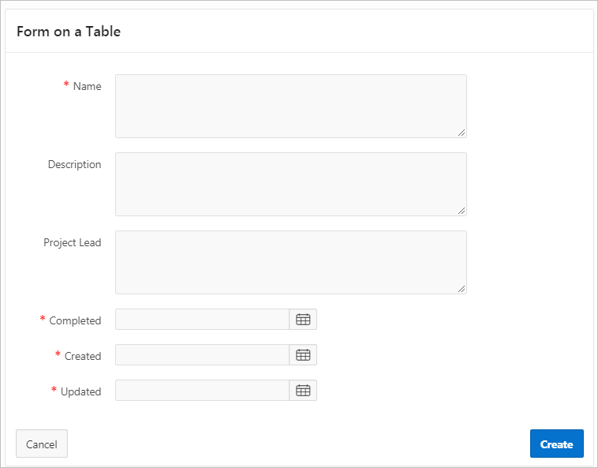
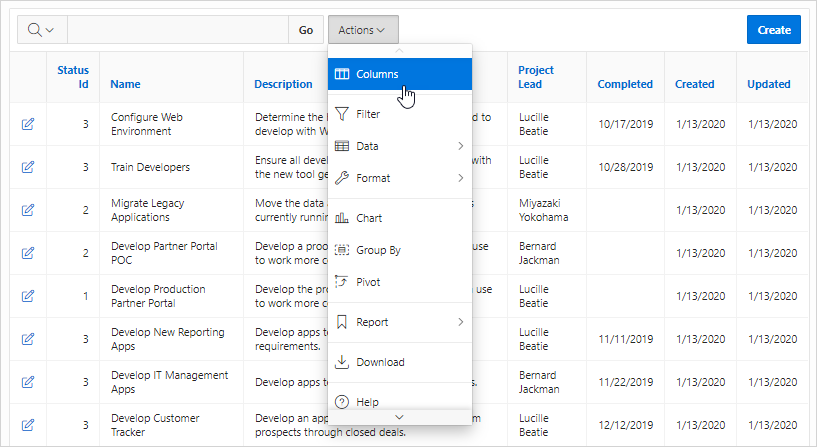

11.1 Understanding Form Types
When creating a database application, developers can create four basic form types: editable interactive grid, form, report with form, or master detail.
- Editable Interactive Grid
View an example of an editable interactive grid. - Form
View an example form. - Report with Form
View an example report with form. - Master Detail Forms
View an example master detail form.
See Also:
Parent topic: Developing Forms
11.1.1 Editable Interactive Grid
View an example of an editable interactive grid.
An interactive grid presents users with a set of data in a searchable, customizable report. In an editable interactive grid, users can also add to, modify, and refresh the data set directly on the page. Functionally, an interactive grid includes most customization capabilities available in interactive reports plus the ability to rearrange the report interactively using the mouse. The following is an example of an editable interactive grid.
Description of the illustration form_ig.png
See Also:
"Using an Editable Interactive Grid" in Oracle Application Express End User’s Guide
Parent topic: Understanding Form Types
11.1.2 Form
View an example form.
From creates a form that enables users to update a single row in a database table. The following is an example of a form on table.
Description of the illustration form_table_ig.png
Both the Create Application Wizard and Create Page Wizard support the creation of a simple form. The main difference between these two wizards is that the Create Page Wizard offers more customization and data source options. Using the Create Page Wizard, the developer has the option to select a data source (that is, Local Database, REST Enabled SQL Service, or Web Source Module). Additionally, the developer can also specify whether to include and configure breadcrumbs or a navigation menu and select the columns and the order in which they display.
Parent topic: Understanding Form Types
11.1.3 Report with Form
View an example report with form.
Report with Form creates a report (that is, an interactive grid, an interactive report, or a classic report) and form on a table. Developers select a Report Type to determine if the report is an interactive grid, interactive report, or a classic report. Users click an Edit icon to access the form.
Both the Create Application Wizard and Create Page Wizard support the creation of a report and form combination. The main difference between these two wizards is that the Create Page Wizard offers more customization and data source options. Using the Create Page Wizard, the developer selects the report type (that is, interactive grid, interactive report, or classic report) and then a data source (that is, Local Database, REST Enabled SQL Service, or Web Source Module). Additionally, the developer can also specify whether to include and configure breadcrumbs or a navigation menu and select the columns and the order in which they display.
The following is an example of an interactive grid report with form.
Description of the illustration report_form_ig.png
Parent topic: Understanding Form Types
11.1.4 Master Detail Forms
View an example master detail form.
A master detail form reflects a one-to-many relationship between two tables in a database. Master detail forms enable users to insert, update, and delete values from two tables or views. Typically, a master detail form displays a master row and multiple detail rows within a single HTML form. Developers can create a single page or two page master detail. You choose the tables on which to build the master and detail regions. Master Detail form options include:
-
Stacked - Creates a single page master detail with editable interactive grids.
-
Side by Side - Creates a single page (or Side by Side) master detail with a master table and detail table. The left side contains a master list to navigate to the master record. The right side contains the selected master record and the associated detail report.
-
Drill Down - Creates a two page (or Drill Down) master detail. The first page contains an interactive report for the master table. The second page features a standard form for the master and interactive grid for the detail.
See Also:
Parent topic: Understanding Form Types